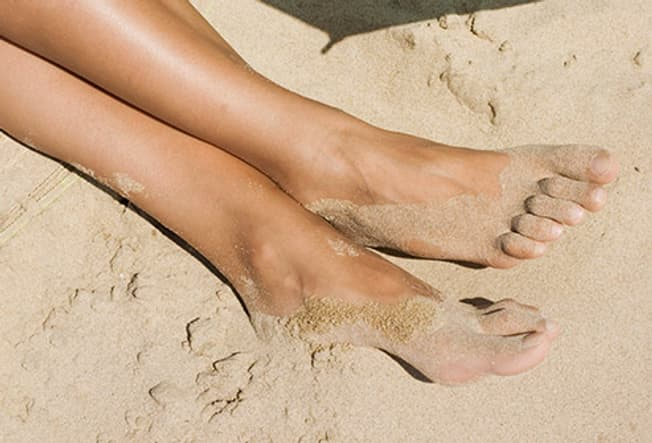

Feeling bloated? Salt may be partly to blame. Too much can make your body hold on to water. And it plays a
role in high blood pressure. How to cut back: Choose fresh foods, not canned or processed. Play around with
other spices that can give your food some zing, like curry powder, garlic, cumin, and rosemary. You’ll
expand your foodie knowledge and have more energy to boot.
Climb the Stairs
When you're angry or freaked out, it's easy to grab a candy bar, light up a smoke, or gulp another cup of
coffee to get through it. A better bet? Exercise. Next time you’re flipped out or riled up, climb a flight
of stairs (or two). Or go for a quick stroll -- even a 10-minute walk can give you a mental boost.
Drop That Doughnut
Do you try to eat your stress away? When things get tense, you may choose comfort foods over fruits and
veggies. But when that rush from refined carbs or sugary food recedes, the crash will leave you sluggish.
Plus, those empty calories can quickly add up to extra pounds. And that won’t help your health at all. Next
time you feel anxious, ignore the sweet stuff. Munch on an apple or take 10 deep breaths instead.
Get Your Beauty Sleep
Want to banish under-eye bags? Hit the hay. You need 7 to 8 hours of sleep a night to recharge and lower
stress. Can’t fall asleep? Don't drink caffeine past noon. Avoid workouts within 2 hours of bedtime. Make
your bedroom a sleep-only zone -- no TVs, pets, computers, or other things that keep your brain online. If
these tips don't work, talk to your doctor.
Break Out of Your Rut
Mix things up. How doesn’t matter: Update your hairstyle, reroute your drive to work, walk the dog in a new
park, add a new breakfast food to your menu. Focus on one easy-to-reach change at a time to ensure success.
It’ll boost your outlook and your mood.
Walk Around the Block
You don’t have to spend hours at the gym. Even a little movement can get you in touch with your body and
restore your energy. A simple walk around the block can clear your head. Any exercise that involves a bit of
meditation -- like yoga or tai chi -- can recharge both your body and your mind.
Eat More Fiber
Feeling bloated? Salt may be partly to blame. Too much can make your body hold on to water. And it plays a
role in high blood pressure. How to cut back: Choose fresh foods, not canned or processed. Play around with
other spices that can give your food some zing, like curry powder, garlic, cumin, and rosemary. You’ll
expand your foodie knowledge and have more energy to boot.
Shake the Salt Habit
Fiber can help you feel fuller faster. That means you’ll eat less and lose weight. It also keeps you
regular, and it’s good for your heart. In fact, it does so much good for you that it can even give you fewer
things to be stressed about! It also comes in many tasty forms, from oatmeal and whole-grain breads and
cereals to fruits such as apples, citrus, strawberries, and veggies. With so many options, it’s easy to get
what your body needs.

Focus on the Present
Be aware of where you are and what’s happening right now. Some call this mindfulness. It can help you relax
and lower your stress. Let go of thoughts about the past or future. Focus on this moment. How does the air
feel against your skin? How does the pavement feel under your feet? If your mind wanders, bring it back to
the here and now.
Call the Doctor
We’ve all done it -- tried to ignore the awful headache, shoulder pain, or cough that just won’t go away.
But ongoing health problems can wear you down. Resolve to get your symptoms checked out by a pro. If you
haven’t had a physical in a while, schedule one now. And if you feel mental health care is in order, don’t
be afraid to discuss that with your doctor, too.
Feed Your Head
Got a lot on your mind? Do something that gets your brain out of its rut. Listen to a nerdy podcast, do a
crossword puzzle, join a book club, or take up a new hobby that keeps your mind and body active. Spend some
time in the garden, or head to the hills and go for a hike.